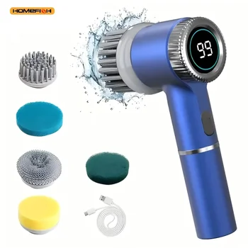

Transform your approach to home cleaning with the innovative Electric Spin Scrubber. Designed for efficiency, versatility, and ease of use, this handheld, rechargeable device promises to make light work of even the most challenging cleaning tasks. Say farewell to strenuous scrubbing and welcome a new era of effortless sparkle in every corner of your home, with a special focus on achieving a pristine shower.
Unleash Versatility with 5 Replaceable Brush Heads
One of the standout features of this electric spin scrubber is its remarkable adaptability, made possible by the inclusion of five distinct replaceable brush heads. This comprehensive set ensures that you have the perfect tool for any cleaning scenario, elevating your cleaning game from average to extraordinary.
Whether you're contending with baked-on grease in the kitchen, stubborn soap scum in the bathroom, or delicate surfaces that require gentle attention, there's a brush head precisely engineered for the job. This thoughtful design eliminates the need for multiple single-purpose cleaning gadgets, streamlining your cleaning arsenal and making your routine more efficient. Imagine effortlessly transitioning from scrubbing tiles to polishing faucets, all with a single, powerful device.
The versatility extends beyond just different types of grime. It also covers various surfaces. From robust ceramic to more sensitive glass or polished chrome, the range of brush heads ensures effective cleaning without causing damage. This means you can confidently tackle a wide array of cleaning projects around your home, knowing you have the right attachment for optimal results.
Precision Cleaning with Three-Speed Adjustable Design
Every cleaning task has its unique demands. Some areas require a gentle touch, while others call for intense scrubbing power. The Electric Spin Scrubber addresses this need with its intelligently designed three-speed adjustable feature.
This allows you to customize the scrubber's power output to perfectly match the intensity of the cleaning task at hand. For lighter dirt or routine maintenance on delicate surfaces, a lower speed setting provides a controlled and gentle clean. When faced with general grime or moderately soiled areas, the medium speed offers a balanced blend of power and precision. And for those truly tough, caked-on messes – think stubborn grout lines or heavily stained surfaces – the highest speed setting unleashes maximum scrubbing force to cut through the dirt effortlessly.
This level of control not only ensures superior cleaning performance but also helps to protect your surfaces from unnecessary wear, guaranteeing a thorough yet safe clean every time. It’s about working smarter, not harder, and achieving professional-grade results from the comfort of your home.
Embrace a Chemical-Free Cleaning Experience
In an age where health and environmental consciousness are paramount, the Electric Spin Scrubber offers a welcome solution for those looking to reduce their reliance on harsh chemicals. This scrubber is designed with a focus on high-concerned chemicals, ensuring that you can achieve a sparkling clean home without the need for strong, potentially harmful cleaning agents.
By leveraging powerful mechanical scrubbing action, the device effectively lifts and removes dirt, grime, soap scum, and bacteria, often requiring only water or mild, natural cleaning solutions. This commitment to chemical-free cleaning creates a safer living environment for your household, especially for families with children and pets, and contributes to a healthier planet by reducing chemical runoff.
Enjoy the peace of mind that comes with knowing your home is not only visibly clean but also free from lingering chemical residues. It's a healthier choice for you, your family, and the environment, proving that effective cleaning doesn't have to come at a cost to well-being.
Your Dedicated Solution for Spotless Showers
The bathroom, particularly the shower, is often one of the most challenging areas to keep clean. Soap scum buildup, water spots, and the potential for bacteria can make maintaining hygiene a constant battle. The Electric Spin Scrubber rises to this challenge, being specifically engineered as an efficient shower scrubber.
Its powerful rotating brush heads are adept at tackling common shower woes. It effectively removes soap scum and grime that adhere to tiles, grout, and glass, restoring their original luster. Beyond just visible cleanliness, the vigorous scrubbing action also assists in removing bacteria, leaving your shower spotless and hygienically clean. The handheld design ensures that every corner, crevice, and high-up tile is within reach, eliminating awkward stretching and bending.
Transform your daily shower experience into one of pure rejuvenation by ensuring your surroundings are always fresh and sparkling. With this scrubber, achieving a pristine, hygienic shower becomes a simple and satisfying task, rather than a dreaded chore.
Conclusion: Effortless Cleanliness Awaits
The Electric Spin Scrubber with its 5 replaceable brush heads, three-speed adjustable design, and commitment to chemical-free cleaning, stands out as an indispensable tool for any modern household. Its versatility, power, and thoughtful engineering combine to offer an unparalleled cleaning experience, making tough jobs simple and ensuring a hygienically clean home, particularly your shower space.
Embrace efficiency and discover the joy of effortless cleaning. Upgrade your cleaning routine today and experience the remarkable difference this powerful scrubber can make.